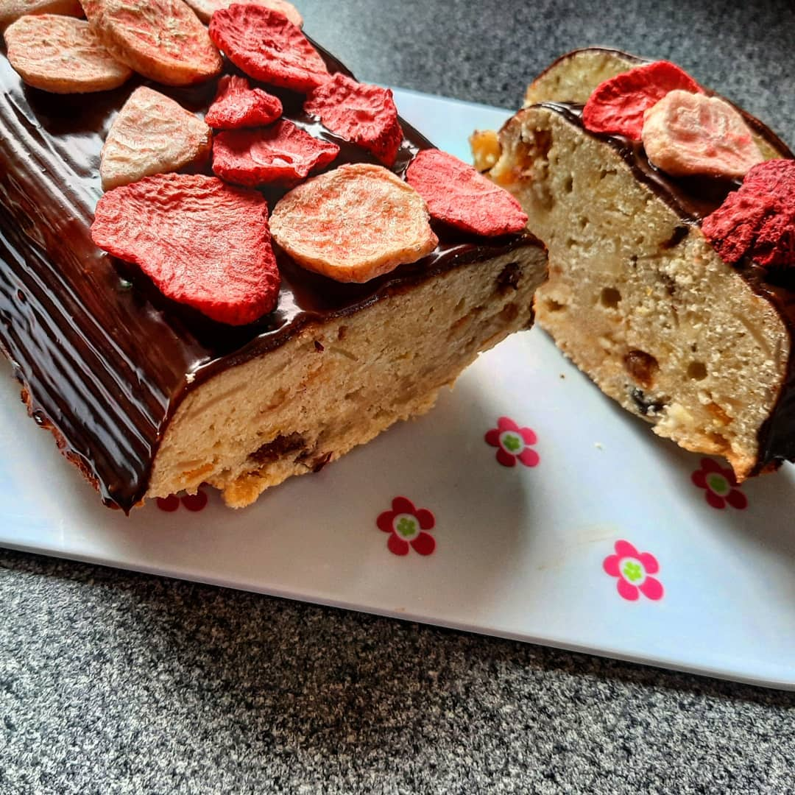

Biskupský chlebíček — Normy Jedál
Když není forma na beránka, musíš udělat do srnčího hřbetu. Biskupský chlebíček, moje prvotina.
#velikonoce #biskupsky #dnespecu #mojevareni #mojepeceni #sladkychlebicek #cokolada #dnespecu #rodina #vareniprorodinu #biskupskychlebicek #easter #spring #mycooking #gastroporno #yumiyumi #yumi #cooking #recepty #lyoovoce #lyofilizovaneovoce #velikonocevlockdownu #velikonocevkarantene #pecenijeradost #velikonocnipeceni #velikonocevkarantene2 #kandovaneovoce #mandle #trenetesto #czechfood #czechcake